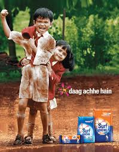
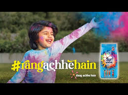

How India's detergent leader transformed stains into symbols of kindness, growth, and togetherness.
Surf Excel didn't sell cleaning power—it sold confidence in mess-making. Daag Achhe Hain and Rang Achhe Hain redefined stains as symbols of growth, kindness, and togetherness.
Case study analyzes Daag Achhe Hain — category-redefining emotional reframe — and Rang Achhe Hain — festival-timed empathy masterpiece. FMCG emotional leadership blueprint.
Detergent category truth: mothers want stain removal + emotional reassurance.
Competitors sold stain removal. Surf Excel sold stain celebration. Insight: mothers want kids exploring freely. "Daag Achhe Hain" gave parenting permission + product confidence.
Child-led kindness stories made stains proof of good actions. Counter-intuitive "stains = good" became cultural phrase. Emotional reframe destroyed functional competition instantly.
"Daag Achhe Hain" didn't sell detergent—it sold parenting values. Cultural penetration created premium equity competitors couldn't match."
Scalable platform across festivals/seasons. Long-term trust > short-term sales. Mothers remembered emotional connection when buying detergent.

Perfect brand extension: Holi colors = stains = togetherness. Child includes elderly neighbor in celebration—empathy through mess-making. Stayed true to core philosophy.
Festival timing + emotional distance context = perfect relevance. Child-led narrative reinforced parenting values. Simple story, massive resonance during emotional need.
"Brand consistency masterclass. Extended Daag philosophy into cultural moment without losing identity. Holi relevance amplified emotional connection."
Social shareability exploded. Reinforced Surf Excel as empathetic, timely, human brand. Festival seasonality maximized impact while strengthening core positioning.

"Daag Achhe Hain" converted problem into parenting permission. Counter-intuitive truths own categories.
Children as kindness heroes = instant emotional connection. Pure motives bypass adult skepticism.
Primary buyers want reassurance + cleaning. Emotional support + functional delivery = unbeatable.
One truth extends across festivals, seasons, themes. Brand platforms beat one-off campaigns.
Rang Achhe Hain extended Daag without dilution. Great brands evolve identity, don't change it.
"Daag Achhe Hain" became conversational currency. Cultural penetration = premium pricing power.
Surf Excel rewrote FMCG rules: Daag Achhe Hain made stains positive, Rang Achhe Hain made colors connective. Detergent became parenting partner.
Universal blueprint: own emotional truth behind functional benefit. Surf Excel proved mothers buy confidence + cleaning. Category leadership through human insight.
Brands win when they reframe problems into parenting permissions.
At Brand Business Talk, we help brands with research, strategy, market insights, and growth recommendations. Let's build your brand growth strategy together.